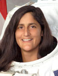

Lyndon B. Johnson Space Center
Houston, Texas 77058
|
National Aeronautics and Space Administration Lyndon B. Johnson Space Center Houston, Texas 77058 |
 |
Biographical Data |
||
Sunita L. Williams (Captain, USN)
NASA Astronaut
PERSONAL DATA: Born September 19, 1965 in Euclid, Ohio, but considers Needham, Massachusetts to be her hometown. Married to Michael J. Williams. Although they have no children, a crazy Jack Russell Terrier named Gorby has added his share of excitement to their lives, as has a Labrador Retriever named Bailey. Recreational interests include running, swimming, biking, triathlons, windsurfing, snowboarding and bow hunting. Her parents, Dr. Deepak and Mrs. Bonnie Pandya, reside in Falmouth, Massachusetts.
EDUCATION:
Needham High School, Needham, Massachusetts, 1983.
B.S., Physical Science, U.S. Naval Academy, 1987.
M.S., Engineering Management, Florida Institute of Technology, 1995.
ORGANIZATIONS: Society of Experimental Test Pilots, Society of Flight Test Engineers, American Helicopter Association.
SPECIAL HONORS: Awarded Navy Commendation Medal (2), Navy and Marine Corps Achievement Medal, Humanitarian Service Medal and various other service awards.
EXPERIENCE: Williams received her commission as an Ensign in the United States Navy from the United States Naval Academy in May 1987. After a six-month temporary assignment at the Naval Coastal System Command, she received her designation as a Basic Diving Officer and then reported to Naval Aviation Training Command. She was designated a Naval Aviator in July 1989. She then reported to Helicopter Combat Support Squadron 3 for initial H46, Seaknight, training. Upon completion of this training, she was assigned to Helicopter Combat Support Squadron 8 in Norfolk, Virginia, and made overseas deployments to the Mediterranean, Red Sea and the Persian Gulf in support of Desert Shield and Operation Provide Comfort. In September 1992, she was the Officer-in-Charge of an H-46 detachment sent to Miami, Florida for Hurricane Andrew Relief Operations onboard USS Sylvania. Williams was selected for United States Naval Test Pilot School and began the course in January 1993. After graduation in December 1993, she was assigned to the Rotary Wing Aircraft Test Directorate as an H-46 Project Officer, and V-22 Chase Pilot in the T-2. While there, she was also assigned as the squadron Safety Officer and flew test flights in the SH-60B/F, UH-1, AH-1W, SH-2, VH-3, H-46, CH-53 and the H-57. In December 1995, she went back to the Naval Test Pilot School as an Instructor in the Rotary Wing Department and the school’s Safety Officer where she flew the UH-60, OH-6 and the OH-58. From there, she was assigned to the USS Saipan (LHA-2), Norfolk, Virginia, as the Aircraft Handler and the Assistant Air Boss. Williams was deployed onboard USS Saipan when she was selected for the astronaut program.
She has logged more than 3000 flight hours in over 30 different aircraft.
NASA EXPERIENCE: Selected by NASA in June 1998, she reported for training in August 1998. Astronaut Candidate Training included orientation briefings and tours, numerous scientific and technical briefings, intensive instruction in shuttle and International Space Station systems, physiological training and ground school to prepare for T-38 flight training, as well as learning water and wilderness survival techniques. Following a period of training and evaluation, Williams worked in Moscow with the Russian Space Agency on the Russian contribution to the space station and with the first Expedition Crew. Following the return of Expedition 1, Williams worked within the Robotics branch on the station’s Robotic Arm and the follow-on Special Purpose Dexterous Manipulator. As a NEEMO2 crewmember, she lived underwater in the Aquarius habitat for 9 days. After her first flight, she served as Deputy Chief of the Astronaut Office. She then supported a long duration mission as Flight Engineer for Expedition 32 and International Space Station Commander for Expedition 33. Williams has spent a total of 322 days in space on two missions; she ranks sixth on the all-time U.S. endurance list and second all-time for a female. With 50 hours 40 minutes, she also holds the record total cumulative spacewalk time by a female astronaut.
SPACE FLIGHT EXPERIENCE: Expedition 14/15 (December 9, 2006 to June 22, 2007). Williams launched with the crew of STS-116 on December 9, 2006, docking with the International Space Station on December 11, 2006. As a member of the Expedition 14 crew, Williams served as Flight Engineer. While onboard, she established a world record for females with four spacewalks totaling 29 hours and 17 minutes of Extravehicular Activity (EVA). (Astronaut Peggy Whitson subsequently broke the record in 2008 with a total of five spacewalks). Williams concluded her tour of duty as a member of the Expedition 15 crew returning to Earth with the STS-117 crew to land at Edwards Air Force Base, California on June 22, 2007.
Expedition 32/33 (July 14 to November 18, 2012). Williams launched from the Baikonur Cosmodrome in Kazakhstan, along with Russian Soyuz commander Yuri Malenchenko and Flight Engineer Akihiko Hoshide of the Japan Aerospace Exploration Agency, on July 14, 2012. They were welcomed on the International Space Station by NASA Flight Engineer Joe Acaba and Russian cosmonauts, Expedition 32 commander Gennady Padalka and Flight Engineer Sergei Revin on July 17, 2012. Williams spent four months conducting research and exploration aboard the orbiting laboratory. She landed in Kazakhstan on November 18, 2012, after spending 127 days in space. During their Expedition, Williams and Hoshide performed three spacewalks to replace a component that relays power from the space station's solar arrays to its systems, and repair an ammonia leak on a station radiator. With 50 hours and 40 minutes, Williams once again holds the record for total cumulative spacewalk time by a female astronaut. In addition, Williams, who has spent a total of 322 days in space on two missions, now ranks sixth on the all-time U.S. endurance list, and second all-time for a female.
NOVEMBER 2012